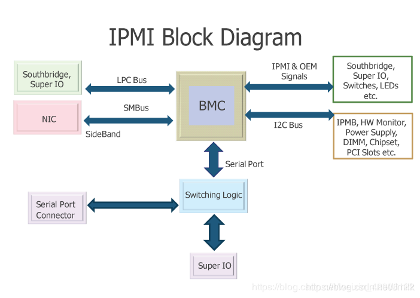

IPMI
智能平台管理接口。
平台管理
平台管理(Platform Management)表示的是一系列的监视和控制功能，操作的对象是系统硬件。比如：通过监视系统的温度，电压，风扇、电源等等，并做相应的调节工作，以保证系统处于健康的状态。如果系统真的不正常了，也可以通过复位的方式来重新启动系统。同时平台管理还负责记录各种硬件的信息和日志记录，用于提示用户和后续问题的定位。
以上的这些功能可以集成到一个控制器上来实现，这个控制器被称为 BMC（Baseboard Manager Controller，基板管理控制器）。
BMC
BMC 通常是一个安装在服务器主板上的独立板卡，其不依赖于服务器的处理器、BIOS 或操作系统来工作，可谓非常地独立，是一个单独在系统内运行的无代理管理子系统。通俗来讲，BMC 是整个服务器单板的大管家。
BMC 与主板上的不同传感器通信来监视系统是否有严重事件，并在某些参数超出其预置阈值时发出警报和日志事件。所有的 IPMI 功能都是向 BMC 发送命令（IPMI 规范中规定的指令）来完成的，BMC 接收并在系统事件日志中记录事件消息，维护描述系统中传感器情况的传感器数据记录。
BMC 具有以下功能：
- 通过系统的串行端口进行访问
- 故障日志记录和 SNMP 警报发送
- 访问系统事件日志和传感器状况
- 远程开、关机
- 独立于系统电源或工作状态的支持
- 用于系统设置、基于文本公用程序和操作系统控制台的文本控制台重定向
一般我们的电脑不会自带 BMC，因为用处不大，一些温度、电源等的管理，通过 CPU 来控制就够了。但是对于系统要求高的设备，比如服务器，就会用到 BMC。又因为 BMC 是一个独立的系统，对于某些嵌入式设备，可能不需要其它处理器，光一个 BMC 就能完成工作。
可见，BMC 本质就是一个带处理器（一般都是 ARM 处理器）的小系统，单独用来处理某些工作也完全是可以的。
IPMI
IPMI（Intelligent Platform Management Interface，智能平台管理接口）是一项应用于服务器带外管理系统设计的标准，通过特有的硬件设备而不是操作系统网络连接来对服务器进行电源的手段。IPMI 能够横跨不同的操作系统、固件和硬件平台，可以智能的监视、控制和上报服务器的运作状况（e.g. 远程开启、关闭电源）以及健康特征（e.g. 温度、电压、风扇工作状态、电源状态等）。IPMI 良好的自治特性克服了以往基于操作系统的管理方式所受的限制，实现了在操作系统不响应或未加载的情况下仍然可以对其进行开关机、信息提取等操作。OpenStack Ironic 正是利用此技术可以远程的对裸机进行上下电或者其他操作，而不是依赖物理开关或者操作系统。
IPMI 的核心是 BMC（Baseboard Management Controller ，基板管理控制器）。当需要对系统文本控制台进行远程访问时，IPMI 的 SOL（Serial Over LAN，LAN 上串口）功能非常关键。SOL 通过将 IPMI 会话重定向到本地串行接口，允许远程访问 Windows 的紧急事件管理控制台（EMS）特殊管理控制台（SAC）或访问 Linux 的串行控制台。BMC 通过在 LAN 上重定向串行端口的信息来做到这点，从而提供了一种与服务器厂商无关的远程查看 OS BootLoader 或紧急管理控制台来诊断和维修故障的标准方式，IPMI 甚至允许在操作系统引导阶段配置各种组件。

ipmitool
ipmitool 是一个用于管理和配置支持智能平台管理接口的设备的实用程序。
ipmitool 程序为 BMC 提供了一个简单的命令行界面。它具有读取传感器数据存储库 (sensor data repository，简称SDR) 和打印传感器值、显示系统事件日志 (System Event Log，简称SEL) 的内容、打印现场可更换单元 (Field Replaceable Unit，简称FRU) 库存信息、读取和设置 LAN 配置参数以及执行远程机箱电源控制。
IPMItool 主页: http://github.com/ipmitool/ipmitool
智能平台管理接口规范: https://www.intel.com/content/www/us/en/servers/ipmi/ipmi-home.html
OpenIPMI 项目：Linux IPMI 内核驱动程序和用户态库 http://openipmi.sourceforge.net
背景
Sun Microsystems 刚刚开始开发新的通用 x86 服务器系列，其中包括一个带有 IPMIv1.5 BMC 的 OEM Intel 主板。ipmitool 最初的作者开始的想法是远程机箱电源控制会很方便在实验室中为他的系统提供的功能，并从那里发展成为一个多功能工具，很多人都觉得它很有用。他决定在 BSD 许可下发布它，并让其他人有机会使用它。
ipmitool 不是为了提供大规模（又名企业）管理应用程序功能而编写的。ipmitool 提供的功能很容易通过发送简单的 IPMI 请求消息并解析返回的响应来完成。它旨在供喜欢命令行实用程序的简单性和可编写脚本的系统管理员以及调试或开发自己的 BMC 实现的系统管理员使用。
要求
显然，最大的要求是具有支持 IPMI 规范的服务处理器的硬件。许多基于 x86 的服务器现在都提供 IPMI 支持，请向您首选的硬件供应商咨询可用产品。
一旦您确定拥有所需的硬件，您就需要决定如何访问 BMC。最常见的情况是通过系统接口或 LAN 进行访问。（或serial，但目前ipmitool不支持serial接口）
系统接口
系统接口有多种类型，但都足够相似，允许单一精心设计的驱动程序来支持它们。不同类型的系统接口包括键盘控制器样式(KCS)、块传输 (BT)、系统管理接口芯片 (SMIC) 和 SMBus。不同的硬件供应商会有不同的偏好和实现。
在 Linux 上，OpenIPMI 内核驱动程序应该支持所有这些系统接口，并且加载正确的内核模块并设置设备节点以使用它应该是一件简单的事情。驱动程序模块名称在不同内核版本中略有不同，但对于所有版本，您都需要这两个模块：
- ipmi_msghandler：传入和传出消息处理程序
- ipmi_devintf：IPMI 驱动程序的字符设备接口
对于 2.4.x 和早期的 2.6.x 内核，您需要根据硬件支持的系统接口类型选择模块。例如：
- ipmi_kcs_drv：键盘控制器样式驱动程序
最新的 2.6.x 内核已将它们组合成一个模块：
- ipmi_si：通用 IPMI 系统接口驱动程序
有关哪些内核模块是必须的，更多信息请参阅您的发行版和/或内核随附的文档。一旦加载了所需的模块并且驱动程序找到了适合 BMC 的系统接口，那么您需要确保 /dev/ipmi0 处的设备节点指向正确的主设备号。
这是因为当它被加载时 OpenIPMI 被赋予了一个动态分配的主编号，但取决于存在的其他模块，这个数字可能是从 254 开始。最简单的判断方法是检查 /proc/devices 的输出并查看“ipmidev”设备分配给哪个主编号。
ipmitool 包含一个名为 ipmi.init 的示例脚本，可用于在启动时自动执行此过程。
安装
$ sudo apt install ipmitool
从源码编译安装请参考: https://github.com/ipmitool/ipmitool/blob/master/INSTALL
用法
ipmitool 的所有调用都需要指定要使用的接口，除非您想使用在编译时设置的默认接口。每个调用还必须指定要运行的命令。您可以在使用 -h 选项的使用输出中查看支持的接口列表和默认接口列表以及顶级命令列表：
usage: ipmitool [options...] <command>
-h This help
-V Show version information
-v Verbose (can use multiple times)
-c Display output in comma separated format
-I intf Interface to use
-H hostname Remote host name for LAN interface
-p port Remote RMCP port [default=623]
-L level Remote session privilege level [default=USER]
-A authtype Force use of authtype NONE, PASSWORD, MD2 or MD5
-U username Remote session username
-P password Remote session password
-f file Read remote session password from file
-a Prompt for remote password
-E Read password from IPMI_PASSWORD environment variable
-m address Set local IPMB address
-t address Bridge request to remote target address
Interfaces:
open Linux OpenIPMI Interface [default]
imb Intel IMB Interface
lan IPMI v1.5 LAN Interface
lanplus IPMI v2.0 RMCP+ LAN Interface
Commands:
raw Send a RAW IPMI request and print response
lan Configure LAN Channels
chassis Get chassis status and set power state
event Send pre-defined events to BMC
bmc Print BMC status and configure global enables
sdr Print Sensor Data Repository entries and readings
sensor Print detailed sensor information
fru Print built-in FRU and scan SDR for FRU locators
sel Print System Evelnt Log
sol Configure IPMIv2.0 Serial-over-LAN
user Configure BMC users
channel Configure BMC channels
session Print session information
shell Launch interactive IPMI shell
exec Run list of commands from file
set Set runtime variable for shell and exec
ipmitool运维管理示例
开始使用 IPMI 命令。
启动相应内核模块
root@dbtuserver:~# modprobe ipmi_msghandler
root@dbtuserver:~# modprobe ipmi_devintf
root@dbtuserver:~# modprobe ipmi_si
root@dbtuserver:~# lsmod | grep ipmi
ipmi_ssif 36864 0
ipmi_si 65536 0
ipmi_devintf 20480 0
ipmi_msghandler 106496 3 ipmi_devintf,ipmi_si,ipmi_ssif
带外管理IP地址
命令格式如下:
ipmitool lan print [<channel number>]
ipmitool lan set <channel number> <command> <parameter>
# 设置静态IP地址
root@dbtuserver:~# ipmitool lan set 1 ipsrc static
# 设置IP地址
root@dbtuserver:~# ipmitool lan set 1 ipaddr 192.168.0.110
# 设置子网掩码
root@dbtuserver:~# ipmitool lan set 1 netmask 255.255.255.0
# 设置网关地址
root@dbtuserver:~# ipmitool lan set 1 defgw ipaddr 192.168.0.1
# 查看带外管理IP地址
root@dbtuserver:~# ipmitool lan print 1
Set in Progress : Set Complete
Auth Type Support : MD5
Auth Type Enable : Callback : MD5
: User : MD5
: Operator : MD5
: Admin : MD5
: OEM : MD5
IP Address Source : Static Address
IP Address : 192.168.0.110
Subnet Mask : 255.255.255.0
MAC Address : 04:d9:f5:50:f9:b6
SNMP Community String : AMI
IP Header : TTL=0x40 Flags=0x40 Precedence=0x00 TOS=0x10
BMC ARP Control : ARP Responses Enabled, Gratuitous ARP Disabled
Gratituous ARP Intrvl : 0.0 seconds
Default Gateway IP : 192.168.0.1
Default Gateway MAC : 8c:16:45:14:31:4c
Backup Gateway IP : 0.0.0.0
Backup Gateway MAC : 00:00:00:00:00:00
802.1q VLAN ID : Disabled
802.1q VLAN Priority : 0
RMCP+ Cipher Suites : 0,1,2,3,6,7,8,11,12,15,16,17
Cipher Suite Priv Max : XaaaaaaaaaaaXXX
: X=Cipher Suite Unused
: c=CALLBACK
: u=USER
: o=OPERATOR
: a=ADMIN
: O=OEM
Bad Password Threshold : 0
Invalid password disable: no
Attempt Count Reset Int.: 0
User Lockout Interval : 0
带外管理用户密码
命令格式如下:
ipmitool user summary [<channel number>]
ipmitool user list [<channel number>]
ipmitool user set name <user id> <username>
ipmitool user set password <user id> [<password> <16|20>]
ipmitool user disable <user id>
ipmitool user enable <user id>
ipmitool user priv <user id> <privilege level> [<channel number>]
ipmitool user Privilege levels:
ipmitool user * 0x1 - Callback
ipmitool user * 0x2 - User
ipmitool user * 0x3 - Operator
ipmitool user * 0x4 - Administrator
ipmitool user * 0x5 - OEM Proprietary
ipmitool user * 0xF - No Accipmitool user
ipmitool user test <user id> <16|20> [<password]>
# 设置用户"admin"(ID为2)的密码为"dbtu2017"
root@dbtuserver:~# ipmitool user set password 2 dbtu2017
Set User Password command successful (user 2)
# 查询所有用户列表
root@dbtuserver:~# ipmitool user list 1
ID Name Callin Link Auth IPMI Msg Channel Priv Limit
1 false false true ADMINISTRATOR
2 admin false false true ADMINISTRATOR
3 true false false NO ACCESS
4 true false false NO ACCESS
5 true false false NO ACCESS
6 true false false NO ACCESS
7 true false false NO ACCESS
8 true false false NO ACCESS
9 true false false NO ACCESS
10 true false false NO ACCESS
ipmitool 电源管理
| ipmitool [chassis] 命令 | 描述 |
|---|---|
| ipmitool [chassis] power status | 获取电源状态 |
| ipmitool [chassis] power on | 硬开机 |
| ipmitool [chassis] power off | 硬断电关机 |
| ipmitool [chassis] power soft | 通过acpi进行软关机，如同轻按一下开机键 |
| ipmitool [chassis] power reset | 硬重启 |
| ipmitool [chassis] power cycle | 强制关闭电源，等待1秒然后再打开电源的组合 |
# 命令帮助
root@dbtuserver:~# ipmitool chassis power help
chassis power Commands: status, on, off, cycle, reset, diag, soft
root@dbtuserver:~# ipmitool power status
Chassis Power is on
# ipmitool -H 192.168.0.110 -U admin -P dbtu2017 chassis power off
Chassis Power Control: Down/Off
# ipmitool -H 192.168.0.110 -U admin -P dbtu2017 chassis power on
Chassis Power Control: Up/On
修改服务器引导启动顺序
# 命令帮助
root@dbtuserver:~# ipmitool chassis bootdev help
bootdev <device> [clear-cmos=yes|no]
bootdev <device> [options=help,...]
none : Do not change boot device order
pxe : Force PXE boot
disk : Force boot from default Hard-drive
safe : Force boot from default Hard-drive, request Safe Mode
diag : Force boot from Diagnostic Partition
cdrom : Force boot from CD/DVD
bios : Force boot into BIOS Setup
floppy: Force boot from Floppy/primary removable media
# PXE引导启动
ipmitool -I lan -H <server_ip> -U root -P passwd chassis bootdev pxe
# 从硬盘引导启动
ipmitool -I lan -H <server_ip> -U root -P passwd chassis bootdev disk
# 从CD/DVD引导启动
ipmitool -I lan -H <server_ip> -U root -P passwd chassis bootdev cdrom
查看相关的传感器信息
root@dbtuserver:~# ipmitool sdr [list]
CPU1 Temperature | 39 degrees C | ok
CPU2 Temperature | 38 degrees C | ok
PSU1 Over Temp | 0x00 | ok
PSU2 Over Temp | 0x00 | ok
TR1 Temperature | 26 degrees C | ok
TR2 Temperature | 55 degrees C | ok
TR3 Temperature | 25 degrees C | ok
DIMMA1_Temp | 32 degrees C | ok
DIMMA2_Temp | 0 degrees C | nr
DIMMB1_Temp | 0 degrees C | nr
DIMMC1_Temp | 0 degrees C | nr
DIMMD1_Temp | 33 degrees C | ok
DIMMD2_Temp | 0 degrees C | nr
DIMME1_Temp | 0 degrees C | nr
DIMMF1_Temp | 0 degrees C | nr
DIMMG1_Temp | 31 degrees C | ok
DIMMG2_Temp | 0 degrees C | nr
DIMMH1_Temp | 0 degrees C | nr
DIMMJ1_Temp | 0 degrees C | nr
DIMMK1_Temp | 31 degrees C | ok
DIMMK2_Temp | 0 degrees C | nr
DIMML1_Temp | 0 degrees C | nr
DIMMM1_Temp | 0 degrees C | nr
CPU1_ECC1 | 0x00 | ok
CPU2_ECC1 | 0x00 | ok
+VCCIO1 | 0.99 Volts | ok
+VCCIO2 | 0.99 Volts | ok
+VCORE1 | 1.78 Volts | ok
+VCORE2 | 1.78 Volts | ok
+VDDQ_ABC_CPU1 | 1.22 Volts | ok
+VDDQ_DEF_CPU1 | 1.22 Volts | ok
+VDDQ_GHJ_CPU2 | 1.21 Volts | ok
+VDDQ_KLM_CPU2 | 1.22 Volts | ok
+12V | 11.89 Volts | ok
+5V | 5.04 Volts | ok
+3.3V | 3.31 Volts | ok
+5VSB | 5.06 Volts | ok
+3.3VSB | 3.30 Volts | ok
VBAT | 3.12 Volts | ok
PMBPower1 | 216 Watts | ok
PMBPower2 | 184 Watts | ok
PSU1 AC Lost | 0x00 | ok
PSU2 AC Lost | 0x00 | ok
PSU1 PWR Detect | 0x00 | ok
PSU2 PWR Detect | 0x00 | ok
CPU_CATERR | 0x00 | ok
Memory_Train_ERR | 0x00 | ok
FRNT_FAN1 | 3000 RPM | ok
FRNT_FAN2 | 3300 RPM | ok
FRNT_FAN3 | 3200 RPM | ok
FRNT_FAN4 | 3200 RPM | ok
FRNT_FAN5 | 3000 RPM | ok
FRNT_FAN6 | 3000 RPM | ok
FRNT_FAN7 | 0 RPM | nr
PSU1 Slow FAN1 | 0x00 | ok
PSU2 Slow FAN1 | 0x00 | ok
Backplane1 HD01 | 0x00 | ok
Backplane1 HD02 | 0x00 | ok
Backplane1 HD03 | 0x00 | ok
Backplane1 HD04 | 0x00 | ok
Backplane1 HD05 | 0x00 | ok
Backplane1 HD06 | 0x00 | ok
Backplane1 HD07 | 0x00 | ok
Backplane1 HD08 | 0x00 | ok
NM Capabilities | 0x00 | ok
Watchdog2 | 0x00 | ok